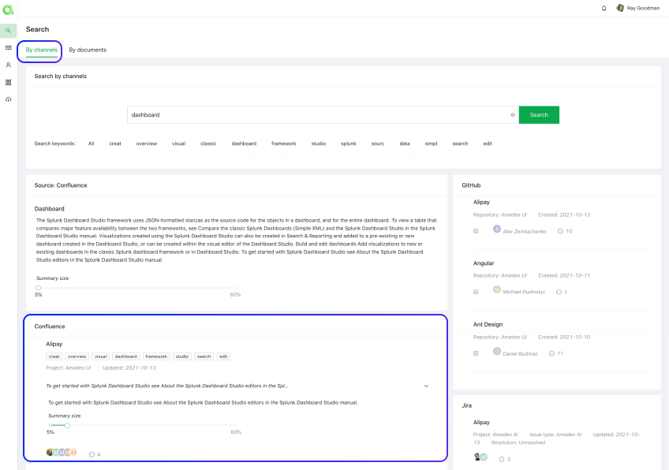
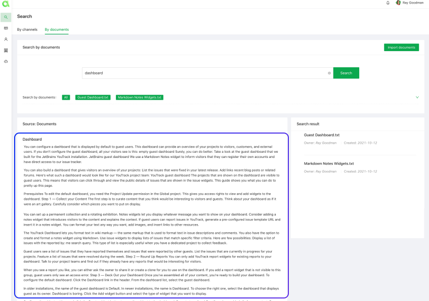

See Amadeo Web Platform in action
a list of relevant resources found in your primary channel

a list of relevant resources found in each of your secondary channels

a list of relevant resources found in your uploaded documents / web resources

a unified summary of all relevant articles found in your primary channel

separate summaries of each individual article found in your primary channel
a unified summary of all relevant articles found in your uploaded documents / web resources
